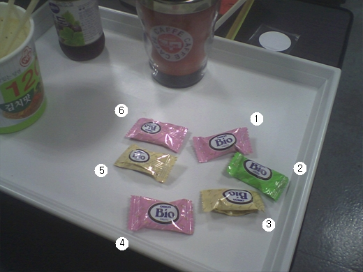

간단한 심리테스트 입니다.
아래 글을 최대한 몰입해서 읽은 후 질문에 대해 리플로 대답을 적어주시기 바랍니다.
당신은 밤 늦게까지 일(혹은 공부)을 하다가 배가고파 사발면을 먹었습니다.
입가심으로 음료를 한잔 마시고 보니 사탕 몇개(소프트 캔디로군요)가 눈에 띕니다.

[그림. 야식후 눈에 들어온 사탕들]
질문1. 어떤 사탕을 먹겠습니까? (1~6 번호로 선택)
질문2. 왜 그 사탕을 집으려고 했습니까? (서술형)
질문3. 사탕들을 보고 무슨 생각이 들었습니까? (서술형)
엉뚱한 답변도 상관없습니다만 제가 필요로 하는건 위 질문에 대한 대답입니다.
이 글은 심리테스트가 아니지만 심리테스트라고 적어야 좀더 진지하게 읽으실 것 같아서 속였습니다. 죄송합니다.
참고로 저는 [4]번을 집어 먹었습니다.
위 괄호 [] 안을 마우스로 드래그하면 숫자가 나옵니다. 단, 대답 리플을 작성한 후에 확인하세요.
결코 정답같은게 아닙니다. 뭔가 이상한 선입견이 생길까봐 가려뒀습니다.
소중한 답변 주신 분들께 미리 감사드립니다.